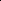
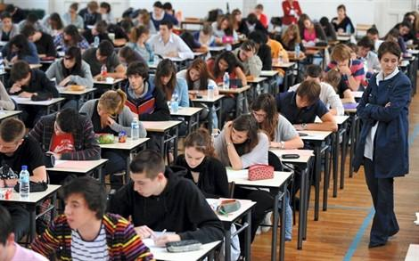

每年看到国外（无论是美国，法国，英国或者新加坡等）的作文题出炉后，心中都升起一股强烈的仓皇失措而怆然泣下的悲凉感：同龄的国外孩子们，这个年龄已经开始认真思考严肃的人生和社会问题，他们的心灵已经开始“仰望头上的星空”和面对“心中的道德律”（康德语）。这些孩子的外表和举止，以及心灵都已经很成熟，完全就像是大人一样“融入社会”一员了。
与此同时，中国的同龄孩子们，虽然外表身躯，已经与他们的父母一样高大，却不得不在“高考”的考场上，故作幼稚地学小孩子扮家家，玩一些很弱智的“作文游戏”。因此，中国的“大学生们”，往往如同缺乏教养的儿童一样幼稚和无知。
我一想到这个问题，就心痛，就茫然，就不知所措：拿什么来拯救你，我的孩子？
我一介草民，无职无权（其实“有职有权”也无法可想），我唯一的办法就是“不合作主义”---回家，自己教！面对纳税人血汗钱投入的“国家义务教育”享受，我只能远远地避开。不能因为我也往里面投了资，丢了钱，“做了贡献”，没有去享受“正当权益”，就觉得自己吃了亏。既然生在这里，就只能算我倒霉！总不至于为了“维权”，“不吃亏”，再把自己的孩子也进一步“投资”给这个变态的“中国教育系统”吧？
可是，看到有这么多的孩子，每年上千万，依然在前赴后继地跳进这个火坑，岂不悲哉！这么多的家长，依然满怀希望地让孩子往火坑里跳，明知有问题，可还振振有词样：不这样，还有什么办法？“别人”不也这样吗？
这些家长将来孩子出了问题，会不会继续说：已经这样了，还能有什么办法？
要不就说：也不是就咱家孩子一个这样，有这么多人陪绑，无憾了？
我的感觉，就是这些家长和孩子，此生似乎就是来扮演“受害者”的，岂不哀哉！ 再把孩子们送到这个熔炉里去的时候，家长们是不是应该张开眼，认真看看您的孩子到底在受什么样的教育？
中外的教育差距到底有多大？各位看看下面这个对比就知道了：
今年的湖北卷高考作文，居然是要学生写“幻想是快乐的源泉”。真是把肉麻当有趣，一个弱智之极的题目。可这么多的专家居然还看不出来，还吹捧说该题目很有水平，“不乏哲学意涵”，好作文，好题目！
出这种题目，首先不知道是要选拔什么样的“人才”，可能是白日梦的“魔幻小说”作家？网络游戏的编剧？还是科幻小说家，梦幻演员？
更要命的是：鼓励幻想也不是不可以，偏巧出题的考官极为霸道无理，要把自己的“臆想”结论，作为所有考生的价值观和标准。这个题目不是鼓励和测验考生的思维开放度，而是预先
限定了固定的，不可置疑的权威结论。而要求考生附会和服从，统一来论证他妄想出来的“幻想是快乐的源泉”这个狗屁结论！
而且把“幻想”所能够导致的无数种可能结果，统统固定成唯一的可能性---“快乐源泉”！
难道“幻想”就不能够是“科学发明的源泉”，“文学创造的源泉”，“哲学思考的源泉”，“艺术想象的源泉”，“音乐家的摇篮”，“百无聊赖的表现”，“郁闷的心理特征”，“逃避现实的行为”，以及“痛苦的源泉”？“白日梦的象征”，“人生失败的源泉”？“缺乏正常人际交往能力的表现”？甚至是“制造神经病和疯人院的源泉”？
为什么偏偏只能是“快乐的源泉”？仅仅因为考官自己因为在幻想中得到了快乐（我们可以很同情地想象这个出题人，生活在怎样的压抑，无奈和苦闷的现实中），就让这种固定的“快乐源泉”来培养我们的孩子只能有唯一的感受选择？这不是故意让我们的孩子丧失思维能力吗？让他们成为思维单一封闭的傻子吗？不是让学生放弃自己的思想和感受，去揣摩考官的心思，设法迎合考官的价值观，成为一个卑颜屈膝的奴才吗？
而且，如果考官的结论是成立的，如果这就是“人生感受的标准答案”，是否也可以根据考官的这种思维和价值观模式，出一个同类的作文题目，叫做【论务实是人生痛苦的根源】呢？
快乐这种很主观的感受，这种完全因人而异的情绪，居然在这帮昏官这里，具有了统一的“标准答案”，而且还剩下唯一的“源泉”和途径，就是“幻想”？
别的途径就不行吗？
诸位只要肯多想一下，这个作文题的漏洞就完全无法自圆其说。可是，这种狗屁不通的题目，却要我们的孩子拿自己的命运去“赌赛”？是什么人，才有如此高才，出得起这种水平的题目？
更要命，更丢丑的是：法国高考今年正好也出了一个类似的题目：Dépend-il de nous d'êtreheureux ? 快乐取决于我们吗？这就与湖北卷的高考题“撞车”了，这一撞，完全撞出了我们题目“山寨版”的本质：法国对于“快乐”的定义，是全然开放的。它要求学生自己来为快乐给出范围：而且这个范围很大，题目绝对的开放。
你完全可以从“内心”所发来论证，说明“快乐不假外求”。
你也可以“心外求法”，认为快乐需要有物质基础，由外而得之，比如可以因为金钱美女，宝马游艇，权利地位等等而得。
当然，你愿意的话，也可以写写你做白日梦的快乐，证明“快乐来自于湖北高考的幻想源泉”。
你尽可以自由地展现自己宽广无尽的思维空间，以及你稀奇古怪的各种结论。只有你言之成理，思路清楚，就是好文章！
相比之下，我们湖北卷作文中“快乐”的定义，是多么的可笑，多么的虚假，多么的霸道无理，多么的苍白无力！
这样，一个简简单单的“快乐”作文题，就把中国考官们昏庸无知，完全不懂基本教育规律的“英雄本色”，以及肚子里面到底有几滴可怜的墨水，毫不留情地暴露了出来。
可是，这群在教育和思维上的弱智群体，却偏偏拥有“教育人民”的强势权利，强制要求我们的孩子“义务”接受他们的弱智教育，这是多么可怜，可悲而又可怕的一件事情！
我们固然GDP 这几年来超过了法国，可别人仅仅是我们一个省这么大，却长期以来就是世界的强国或强国之一。历史上直到现在，这个国家出了这么多的科学家，文学家，艺术家，创造了这么多的世界级别的精神和文化财富。甚至在我们国家把最可贵的资源以最廉价的，基本上是“打倒贴”的价格去赶超世界先进国家，创造GDP 幻梦的时候，别人却把一瓶最普通，最环保，最不需要资源牺牲的葡萄酒，以几千上万美金一瓶的高价卖给世界，包括中国的“上层人士”，全世界各种高价奢侈品的制造品牌，主要集中在法国，可见其“文化”竞争力的强大，这绝对不是没有原因的！
根子就是教育！这就是差距，教育的差距！而教育的差距就是国民的差距，国民的差距就是国家的差距。
教育差距的标志性代表，就是高考，我们的“高考”！一个无厘头的，根本没资格称为“教育”的丑陋闹剧，最多只能勉强称为“筛选器”的官僚机构，就是一个把我们的孩子，也是把我们的国家和民族引向泥潭和深渊的指挥棒！
即使这样，我们的孩子通过了如此可怕的“考验”，就算是考上大学又如何呢？
请家长们看看：
可怕的大学新周刊2010009 期：可怕的大学 转载（点击进入）。
您的理想就是让孩子进入这样的地方吗？它唯一能够保证的结果就是：您的孩子毕业后一定比进去的时候更颓废，更茫然，更缺乏活力和幻想，更不会适应社会！其中很小的一批人拼命挣扎，勉强保留了一点“理性”“思考”和“进取”，但是已经遍体鳞伤。这样的大学，不读也罢！
请各位正在为孩子谋划“美好未来”的人，读一读下面的文章，不要掩耳盗铃。假装一切都很正常！为了孩子，您需要更全面的关注和了解中国教育。即使是你不愿意见到的也必须了解，如果你不愿意相信，只需要去做一件事情---求证：这是真的吗？其实，你的“心”自然会告诉你真假的。只要你没有被贪欲所迷惑，所谓的“利令智昏”，你就会知道：真实的情况，可能比你看到的更为严重！参考阅读（均可点击文章题目进入）：1 大学校长的亲身感受 老校长刘道玉：中国之大竟容不下一点风骨和理想„ 2 国外大学校长的观察 耶鲁前校长说：中国教育“是人类文明史上最大的笑话”3 大学教授的评价 耶鲁大学教授评述：中国教育只能培养最低端的劳动力„4 大学的潜规则掠影 北大副校长透露潜规则：女生想拿博士学位，要陪导师上床5 学生的感受和抗议：一个清华博士生的退学申请---我们的大学价值何在？清华梦的粉碎„6 最高学府清华大学的怪现象 清华教授评价：清华大学生像是会考试的文盲„7 您的孩子在大学里玩什么样的游戏 大学校园版的官场现形记（转）写得真贴切8 真正的大学应该像是什么样的呢？想知道，就看看这篇文章吧：美国大学为何优异？薛涌9 有点钱，有点脑子的国人怎样应对中国的“教育”：中国富人掀移民海外潮 追求教育与资产安全以下附录 2010 年度的法国高考（中学毕业会考）作文题。

每年中国高考过后不久，就是法国的中学毕业会考（le Bac）了。这里就是刚刚出炉的2010年度60 万法国中学毕业生要做的作文题。文科（série littéraire)，以下3 题，任选其一：(1) La recherche de la vérité peut-elle être désintéressée ? 对于真理（相）的追求是否可能没有利害关系？（2）Faut-il oublier le passé pour se donner un avenir ?为了给自己一个未来，是否应该忘记过去？（3）Expliquer un extrait de la "Somme théologique" de Thomas d’Aquin 解释托马斯·阿奎那《神学大全》的节录。经济社会科（série économique et sociale) ，以下3 题，任选其一：（1）Une vérité scientique peut-elle être dangereuse ? 某些科学真理是不是有可能是危险的？（2）Le rôle de l'historien est-il de juger ? 历史学家的作用是否是评判？（3）Expliquer un extrait de "L’éducation morale" de Durkheim 解释杜尔凯姆《道德教育》节录。理科（série scientifique)，以下3 题，任选其一：（1）L'art peut-il se passer de règles ? 艺术是否可能避免（不要）规则？（2）Dépend-il de nous d'être heureux ? 快乐取决于我们吗？（3）Expliquer un extrait du "Léviathan" de Hobbes 解释霍布斯《利维坦》节录。我的评论：

这些题目的最大特点，就是没有“限制”，没有“标准答案”，任由学生展开自己的思维探索，思考这些人生最严肃的问题。每一种回答都是“对”的，全看你怎么去“自圆其说”，所以对于学生的思维和逻辑要求很高。但是，结论如何，倒是不重要的，关键是过程！
这就是“重在过程”，“重在参与”，而不是“结果”，“结论”，“标准答案”。呈现在孩子们面前的，是一个开放的空间和世界。比如：为了给自己一个未来，是否应该忘记过去？等等，都是这样的开放式题目。
这还是中学的毕业会考，如果到了大学，就更鼓励学生提出开放式的问题和思考了。因此，别人的国民教育出来后，才会“有脑子”，不像我们的“教育”，专门把无限的可能性，弄成唯一的“标准答案”，把活生生的思维和现实的生活，硬要弄成死气沉沉的“统一格式”。
为什么我们的教育只能培养低档打工仔？这就是答案！
今年的全国高考卷，也依然延续了去年的童话故事特征，两个题目，都以“童话”故事为基础，让我怀疑全国高考作文题的出题人，大约是董浩叔叔，要不就是知音姐姐。
2010 年普通高等学校招生考试全国卷1 作文题。漫画作文。餐桌，许多猫吃鱼，就一只猫捉老鼠，别的猫说：“有鱼吃还捉老鼠？”附图2010 年普通高等学校招生考试全国卷1 作文题。阅读下边的材料，写一篇不少于800 字的文章，今年世界读书日这天网上展开了关于浅阅读的行动。甲：什么是浅阅读乙：就是追求简单轻松，实用有趣的阅读。联合国教科文组织选择4 月23 日的灵感来自于一个美丽的传说。4 月23 日是西班牙文豪塞万提斯的忌日，也是加泰罗尼亚地区大众节日“圣乔治节”。传说中勇士乔治屠龙救公主，并获得了公主回赠的礼物——一本书，象征着知识与力量。。。。。所以这一天成为全球性图书日看来“名正言顺”。
再看看其他省市的表演吧，看看有没有什么亮点？
2010 年江苏高考作文题:绿色生活绿色,生机勃勃,赏心悦目。绿色,与生命、生态紧密相连。今天,绿色成为崭新的理念,与每个人的生活息息相关。请以“绿色生活”为题写一篇不少于800 字的文章。2010 浙江高考作文题:角色转化之间传说有的雏鸟长大后,会衔食喂养衰老的母鸟。人们把此现象称为“反哺”。人类社会也存在类似现象。年轻一代对年长一代的文化影响被称之为“文化反哺”。施教者与受教者之间,角色常常发生转换。以“角色转化之间”为题,可以讲述故事,抒发情感,也可以发表见解。文体除诗歌外不限,字数在800 字以上。2010 年普通高等学校招生考试重庆卷作文题：难题《难题》——重庆高考(论坛)作文题2010 年广东高考作文题:与你为邻命题作文《与你为邻》:你我为邻,相互依存。你可以是有形的,也可以是无形的。邻,无法
回避,却可有所选择。请你联系自己的生活体验和感受,以《与你为邻》为标题写一篇文章。不少于800 字。2010 年上海高考作文题:材料作文根据以下材料,选取一个角度,自拟题目,写一篇不少于800 字的文章(不要写成诗歌)。丹麦人去钓鱼会随身带一把尺子,钓到鱼,常常用尺子量一量,将不够尺寸的小鱼放回河里。他们说:“让小鱼长大不更好吗?”两千多年前,我国孟子曾说过:“数罟不入洿池,鱼鳖不可胜食也。”意思是,不要用细密的渔网在池塘里捕捞小鱼,这样才会有更多的鱼。实际上,其中的道理也贯穿在我们现实生活中的许多方面。2010 年普通高等学校招生考试陕西卷作文题2010 年高考(论坛)陕西选用材料作文形式,共给出三则材料,大意分别是:1:把一条热带鱼放在一个小鱼缸里,它只能长到3 寸大小;把它放进大鱼池里,它才有可能长的很大;2、狼之所以勇猛矫健,是因为它长期生活在野外环境里;3、一位心理学家挑选了10 个人,并告知他们都是有天赋的人,后来这10 个人都获得了成功,但心理学家最后坦言,他们当初其实只是普通人。题目要求考生结合以上三段材料,自主命题,撰写800 字作文。2010 年普通高等学校招生考试四川卷作文题一个点可以构成一条线,可以构成一个平面,最后构成立体。人生就像不规则的几个点,这些点又可以连成无数条线,这些线又可以组成不同的平面,不同的平面又可以组成不同的几何体。请从人生的角度写作。据此自拟题目,写一篇不少于800 字的文章。2010 年普通高等学校招生考试北京卷作文题:仰望星空与脚踏实地以仰望星空与脚踏实地为题。写一篇不少于800 字的文章,除诗歌外,不限文体。2010 年普通高等学校招生考试天津卷作文题:我生活的世界话题作文《我生活的世界》,不少于800 字2010 年普通高等学校招生考试山东卷作文题人生的一切变化,一切都有魅力,一切都是由光明和阴影构成的,要求根据以上的材料来写一篇800 字以上的文字。